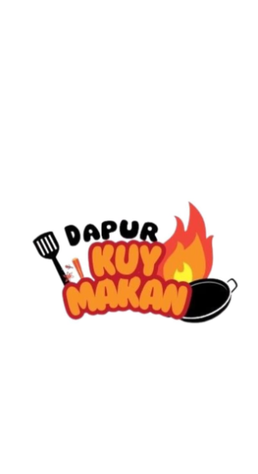

Aplikasi Website Kuy-Makan



Deskripsi Proyek
Kuy-Makan adalah aplikasi web berbasis React.js yang memudahkan pengguna dalam mencari dan memesan makanan secara online...
Fitur Utama
- Pencarian makanan berdasarkan kategori
- Keranjang belanja interaktif
- Metode pembayaran modern dan mudah
- Struk pemesanan otomatis setelah pembayaran
- Admin panel untuk pengelolaan produk dan transaksi
Teknologi yang Digunakan
- React.js (Frontend)
- Vite (build tools)
- JavaScript ES6+, CSS3, HTML5
- Vercel (Deployment Hosting)
Link Proyek
← Kembali ke Proyek